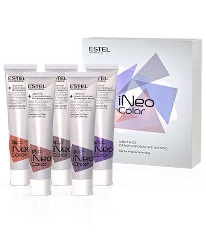
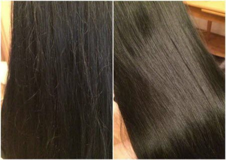
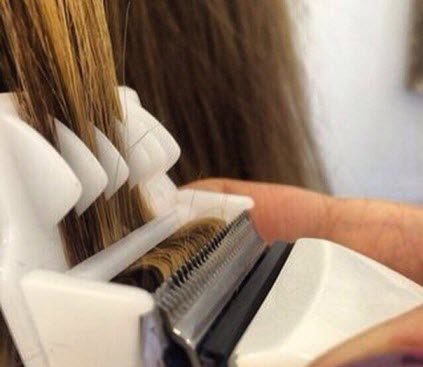
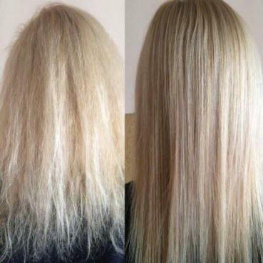

Это процедура экспресс-ламинирования. Покрывая волосы тонкой, прочной, дышащей плёнкой, продукты iNeo эффективно восстанавливают кутикулу и защищают волос от повреждений. Волосы приобретают эластичность, гладкость, силу, плотность, многомерное кристаллическое сияние и «эффект памяти», облегчающий укладку. Процедура занимает всего 10 минут без применения сушуара и климазона!
Это дегустация цвета для блондинок, дающая возможность попробовать 5 сияющих оттенков за короткий промежуток времени. Цветные ламинирующие гели iNeo-Color бережно тонируют волосы и позволяют менять имидж по первому желанию: цвет уходит после 2-3 применений шампуня, в то время как эффект ламинирования сохраняется и накапливается раз от раза.

Кто же из нас не хочет красивых, послушных и гладких волос всего после одной процедуры, да еще и на длительное время? К тому же еще избавится от такой извечной проблемы для всех девушек как секущиеся концы. Такой эффект нам предлагают в салонах после процедуры полировки волос. Попробуем разобраться в сути этой процедуры, выяснить все плюсы и минусы, а также стоит ли вообще тратить на полировку свое время и деньги.

Суть процедуры в том, чтобы удалить по всей длине торчащие сухие и посеченные кончики. При этом длинна волос в целом сохраняется, но исчезают секущиеся волоски, за счет чего волосы становятся более гладкими и ухоженными. Помните, ничто не склеит секущиеся кончики, только отрезать, а потом стараться по максимуму и регулярно за ними ухаживать.
Хотите избавится от посеченных кончиков волос и при этом не потерять в общей длине? Тогда полировка волос для вас.

После процедуры полировки, волосы нуждаются в особом уходе. Обязательно подбирайте качественную косметику для волос, которая подходит для вашего типа волос, без содержания в составе агрессивной химии. Парабены, сульфаты, красители – вредные химические добавки, которые причиняют вред волосам, впитываясь в структуру локонов, повреждая их изнутри. Приобрести средства для домашнего ухода можно у нас в салоне. Мастер подберет и порекомендует самый подходящий для Вас уход. Важно после процедуры полировки волос правильно ухаживать за волосами дома: подобрать соответствующие вашему типу волос ежедневные средства для ухода, всегда использовать бальзам или кондиционер для волос, регулярно делать хорошие маски для волос, использовать несмываемые средства. А также укреплять волосы витаминами, правильным питанием и спортом, что играет львиную долю в здоровье волос.
Посеченные волосы не подлежат восстановлению и это общеизвестный факт и единственный способ избавится от сеченных волос — это обрезать их. Но, когда волосы секутся не только на концах, а и по всей длине, то тогда обрезать секущиеся волосы довольно трудно и при этом еще сохранить длину. Эту проблему решает полировка волос, плюсы процедуры:

Массаж - это целостная терапия, которая воздействует как на тело, так и на психику. Массаж влияет на повышение крово- и лимфообращения. Для существенного повышения скорости кровотока необходимо использовать механическое действие ритмичного мануального давления и массажные движения. Кроме того, стимулируя нервные окончания можно повлиять на сужение кровеносных сосудов, что приводит к ускорению притока крови. Все это имеет большое влияние на здоровье человека. Известно также, что после массаж происходит изменения в крови.
После массажа кислородная емкость крови повышается от 10% до 15%. Массаж позитивно влияет на все мышцы тела, тем самым расслабляя зажатые и сокращенные мышцы, а также стимулируя слабые и дряблые. Благодаря массажу происходит мягкое растяжение мышц и соединительных тканей, которые окружают и поддерживают мышцы, в том числе и других частей тела, что сохраняет эластичность этих тканей.
Массаж влияет на повышение секреции и экскреции тела. Доказано, что после массажа в организме вырабатываются больше слюны, желудочного сока и мочи. Помимо того, повышается выведение хлорида натрия (соли), азота и неорганического фосфора. Выходя из этого можно сказать, что после сеанса массажа повышается скорость обмена веществ.
Массаж существенно воздействует на нервную систему. Он уравновешивает, то есть успокаивает или стимулирует нервную систему - смотря какой эффект необходимый для человека. Массаж оздоровляет кожу, улучшая работу потовых и сальных желез, которые ее смазывают, а также очищают и охлаждают кожу.
Массаж оказывает огромное влияние на внутренние органы. Он прямо или косвенно стимулирует нервы, которые снабжают органы. После этого кровеносные сосуды внутренних органов сужаются, и увеличивается приток крови к органам.
Многие люди имеют не совсем верные представления о массаже - 12 основных мифов.
Миф 1. Если спина прямая, значит позвоночник здоровый
Хорошая осанка, действительно, важна для
здоровья. Однако это вовсе не значит, что спина должна быть идеально ровной. Чтобы спина амортизировала при
ходьбе, человеку необходимы естественные изгибы позвоночника. К сожалению, у многих людей с рождения
наблюдается сглаженность этих изгибов, то есть их спины чересчур прямые. Внешне это выглядит красиво, но на
самом деле - не очень хорошо.
Миф 2. Проблемы со спиной может решить мануальный терапевт
Многие думают, что если болит спина,
достаточно найти хорошего мануального терапевта, который "поставит" позвонки на место. Сразу предупреждаю:
никаких костоправов или костоломов даже близко к себе не подпускайте. Вправление позвонков жесткими методами
допустимо только тогда, когда травма свежая - смещение позвонков произошло 2-3 дня назад. И даже в этом
случае нужно сперва разработать и разогреть проблемное место. "На холодное тело" никаких резких манипуляций
проводить нельзя.
Мануальные терапевты очень любят "щелкать" позвонками, особенно в грудном и шейном отделах. После этих
процедур они говорят пациенту: "Я всё вправил". Вот только со временем делать эти "вправления" приходится
всё чаще и чаще, потому что от некорректного обращения позвонки разбалтываются.
У меня был пациент, который из-за подобного "лечения" чуть не погиб. На протяжении двух лет мануальный
терапевт ему регулярно "вправлял" грудной отдел. В результате позвонки настолько разболтались, что, когда он
однажды ехал на машине и полез на заднее сидение за барсеткой, один позвонок выскочил серьезно. Еще счастье,
что человек успел затормозить, потому что буквально в тот же момент у него полностью отказали ноги. Десять
минут он просидел в машине, и только потом чувствительность и способность двигаться стали постепенно
возвращаться. Если бы не успел нажать на тормоз, то, скорее всего, погиб...
С позвоночником вообще работать напрямую не следует. Патологические процессы, которые происходят с
межпозвонковыми дисками и хрящами, практически необратимы. Однако мышцы и связки, которые являются
амортизаторами, стабилизаторами и участниками движения, имеют способность к восстановлению. Именно поэтому
при лечении заболеваний опорно-двигательной системы врачи, прежде всего, работают с мышцами, связками и
сухожилиями, а вовсе не с костями.
Миф 3. Чтобы спина не болела, нужно укреплять мышечный корсет
Для человека с изначально здоровым позвоночником укрепление мышечного корсета - хорошая профилактика. Но, что произойдет, если у человека уже есть проблемы (заметно снижена высота межпозвонковых дисков, имеются болевые ощущения и спазм мышц), а он начинает "укреплять мышечный корсет", мучается, но тренируется? Пока длится занятие, мышцы работают и понемногу приходят в тонус, но проблема-то остается нерешенной - остальные 22 часа в сутки организм всё равно работает на спазм. Кроме того, довольно часто случается, что, резко начиная заниматься лечебной физкультурой, человек выбирает для себя непривычные нагрузки и тут же получает дополнительную травму.
Но грамотный специалист никогда сразу не отправит больного на укрепление мышечного корсета. В первую очередь, необходимо поставить точный диагноз и подобрать адекватное лечение. Что же касается физической нагрузки, то здесь перед врачом встают три основных задачи: подготовить к ней пациента (убрать спазм мышц, снизить давление на спинно-мозговые нервы, разработать связки и сухожилия в проблемной области), подобрать оптимальные упражнения и научить правильно их выполнять.
Миф 4. Любой массаж полезен для спины
Смотря, какой массаж. Например, сейчас во многих торговых центрах ставят автоматические массажные кресла и предлагают за деньги десятиминутный массаж. Предупреждаю: это очень опасно! В моей практике были пациенты, которые серьезно пострадали от такого рода "массажа". Если же говорить о настоящем лечебном массаже, то он должен быть направлен на расслабление и освобождение мышц, чтобы они могли растягиваться и нормально сокращаться. Одновременно должна идти работа с окружающими связками и сухожилиями, чтобы улучшить их эластичность.
Отдельно хочу сказать о тракции - вытяжении, его сегодня довольно часто применяют при лечении заболеваний позвоночника. Цель вытяжения: мягкая разгрузка спинномозговых нервов и дисков. С шейным отделом нужно работать только руками, потому что это очень деликатная область. Конечно, это требует большого мастерства. Не зря обучение специалистов длится несколько месяцев - человек, который работает с таким аппаратом, должен не только научиться работать с системой, но и уметь чувствовать пациента. Особенно это важно, когда речь идет о таком серьезном заболевании позвоночника как межпозвонковая грыжа.
Миф 5. Физиотерапия при болях в спине бесполезна
Я даже знаю, кто распространяет это заблуждение. Иногда ко мне приходит такие пациенты: "Доктор, зачем вы назначаете мне физиотерапию? Я уже всё это у себя в поликлинике несколько месяцев делал. Никакого эффекта". А я им отвечаю: "Знаете, есть машина Мерседес, а есть Запорожец. Обе - машины, обе ездят. Но почувствуйте разницу! Потому что важно и качество езды, и тот, кто сидит за рулем.
Кроме того, физиотерапию нужно назначать не по общепринятой схеме, а подбирать индивидуально, строго с учетом всех показаний и противопоказаний. Если врача что-то настораживает, он обязательно должен направить пациента на дополнительное обследование к профильному специалисту (например, к гастроэнтерологу, специалисту по сердечно-сосудистой системе и т.д.). Потому что часто бывают ситуации, когда то или иное физиотерапевтическое воздействие может оказаться нежелательным из-за болезней в другой сфере.
Миф 6. Самое частое заболевание позвоночника - остеохондроз
К сожалению, действительно, многие врачи, бегло осмотрев пациента, который жалуется на боли в спине, пишут в карте диагноз "остеохондроз". Вот только пользы от такой "диагностики" никакой. Дело в том, что остеохондроз при переводе с медицинского языка расшифровывается как "какие-то изменения в костно-хрящевой ткани". Такого рода изменения есть у каждого взрослого человека на земном шаре. Поэтому когда врач с серьезным видом говорит: "У Вас остеохондроз", ему можно ответить: "У Вас тоже остеохондроз, только у Вас ничего не болит, а у меня болит. Поэтому объясните причину моего плохого самочувствия".
Грамотные специалисты стараются не использовать диагноз "остеохондроз", а, например, в современной американской медицине его вообще не применяют. Как можно начинать лечение, если неясно, о какой конкретно проблеме идет речь?
Для того чтобы понять, почему болит спина, нужно обследовать состояние межпозвонковых дисков, нервов, мышц, связок, а заодно проверить, нет ли у пациента системных заболеваний (таких, как инфекционные артриты, ревматоидные артриты, подагрические артриты). Лишь после того, как все эти вопросы прояснены, можно начинать работать с проблемой - комплексно с применением по мере необходимости массажа, вытяжения, физиотерапии, лечебной физкультуры.
Миф 7. Массаж можно делать так часто, как захочется.
На самом деле это настолько интенсивная процедура, что ежедневные сеансы сведут на нет положительный эффект – такая нагрузка организму не нужна. Максимально часто делать массаж можно через день. А оптимально – 2-3 раза в неделю. Традиционно курс составляет 10 процедур, но лучше подобрать для себя программу с учетом индивидуальных особенностей. Это может быть 5-7 лечебных сеансов или 12-15 расслабляющих, тонизирующих и корректирующих фигуру. После окончания курса можно делать массаж один раз в две недели – просто для поддержания тонуса. Даже разовый сеанс дает хорошую "встряску" организму – разница в самочувствии до и после чувствуется, жить становится легче и приятнее.
Миф 8: «Массаж не нужно делать вообще»
Очень достойное заблуждение, если вы молоды, здоровы и красивы. Если одной из составляющих не хватает, то массаж делать нужно, пока не поздно. Это самый простой и физиологичный способ современной натуропатической медицины. Что может заменить тепло человеческих рук и простоту получения искомого результата? Массажист за вас выполняет то, что вам лень делать: укрепляет мышцы, восстанавливает подвижность суставов и эластичность кожи, облегчает работу сердечно - сосудистой системы, убирает отеки. А еще помогает вам справиться со стрессами и физическими перегрузками, восстанавливает иммунитет и возвращает радость жизни. Можно же конечно обойтись и без всего этого, а нужно ли? Знаете ли вы, что наша кожа - это источник эндорфинов (гормонов удовольствия), под воздействием массажных приемов их вырабатывается огромное количество. И вы опять счастливы тем самым чудесным детским счастьем, для которого не надо никаких причин, кроме одной - открыть утром глаза.
Миф 9. Массаж надо начинать делать после 40 лет.
40 лет - это возраст опоздания, так как в это момент организм готовится к менопаузе и запустил уже все процессы старения кожи. Необходимо предупредить их, не позволить лицу безвольно обвиснуть, глазам потухнуть, а коже посереть. Начинать надо в 25 лет с профилактических массажей 1 раз в неделю курсом 10 процедур. А после 30 лет делать 2 раза в год курс из 10 сеансов массажа через день. И когда подойдет возраст снижения гормональной активности организма, вы будете к нему готовы, а ваша кожа не утратит враз эластичность и не обвиснет.
Миф 10. Длительность массажа может быть 2 часа и более
Пагубное заблуждение, которое может отразиться на здоровье любителей длительного массажа. Существует физиологическая норма тактильного воздействия на тело человека – около одного часа. Превышение этой нормы приводит к негативным последствиям для всего организма. Рецепторы кожи (механорецеп-торы) быстро адаптируются к тактильному воздействию, чувствительность к массажным приемам снижается на 30-50%, соответственно, уменьшается и эффективность массажа. Можно пролежать и 3 часа, только пользы никакой организму от этого не будет, а вот вреда... Сравните свои ощущения с употреблением сладкого: одну конфетку съели - вкусно, а коробку - плохо. Наш мозг устроил все наилучшим образом для защиты от чрезмерных ощущений, от которых можно и пострадать. У нас даже имеются специфические нейроны, называемые нейронами новизны, ведь жажда перемен и новых ощущений позволяет человеку двигаться по эволюционной лестнице. Поэтому вспомните каламбур: «Лучше недоесть, чем переспать». Организм позаботился о нашей защите от передозировки ощущений за счет снижения чувствительности к ним.
Очень внимательно к длительности массажа должны отнестись гипертоники и гипотоники. В первом случае длительный и сильный массаж вызовет повышение давления за счет резкого изменения объема циркулирующей крови и выброса метаболитов в межклеточное пространство, а возможно и гипертонический криз. Во втором же случае длительная тактильная стимуляция и долгое нахождение в горизонтальном положении могут вызвать снижение артериального давления, головокружение и тошноту. Не забывайте золотое правило: все должно быть в меру.
Миф 11. Массаж должен быть болезненным
Знаете ли вы, что боль - это необходимый механизм адаптации человека в окружающей среде. Если бы мы не испытывали боль, то вряд ли врачи спасли бы нас во время приступа аппендицита или при инфаркте миокарда. Боль - это сигнал к действию, это предупреждение о неполадках в организме и об опасности. Мышцы на боль реагируют резким сокращением, готовятся к бегству или нападению, а вы лежите на массажном столе, куда бежать и зачем?
Мышцы - это наше основное депо крови. Под воздействием болевых импульсов мышца сокращается и происходит выдавливание крови и жидкости с токсинами во внутренние органы, подкожно жировую клетчатку, железы и магистральные сосуды. Происходит токсико-шлаковый удар по всему организму. Вместо оздоровления получаем мощнейшую интоксикацию. Тело болит, голова болит, тошнота и т.д. С возрастом наше межклеточное вещество и так становится похожим на болото, где осаждаются и крупные белковые молекулы, и «обломки» вирусов, и антигены. И для предотвращения преждевременного старения необходимо «осушить болото» и улучшить лимфообразование, а не добавлять новые токсины. Мы сами причиняем себе боль и не понимаем, почему наши ткани становятся все более отечными и дряблыми. Надо поменять парадигму: массаж должен быть не болезненным, а глубоким. Вы приходите на массаж по поводу боли в шее. Вы хотите только одного, чтобы вам стало легче. Нет необходимости причинять вам еще большую боль, работая с болезненными мышцами. Существуют сотни абсолютно безболезненных способов лечения.
Боль - это всего лишь сигнал, и не надо сознательно ее себе причинять. Наши мышцы под воздействием постоянных стрессов находятся в гипертонусе, мы несем на своей спине тяжкий груз неотработанных эмоций и проблем, мы заключены в панцирь. Избавиться от него можно лишь через мышечное расслабление, без боли растягивая и разминая мышцу либо используя рефлекторно-сегментарное воздействие: болит внизу - работаем вверху, болит вверху - работаем внизу. Золотые правила рефлексологии.
Настоящий массаж даст отдых не только усталым мышцам, но и воспаленному уму, так как они находятся в обратной связи: мозг-мышца-мозг и наоборот. Массаж должен быть глубоким, а не болезненным, должен лечить, а не вредить. Грамотный специалист всегда найдет такие приемы, где вы сможете испытать всю глубину ощущений от кожи до кости, но без боли. Задайте себе простой вопрос: «Что я хочу? Испытать боль или стать здоровым?» Не только задайте, но и ответьте на него. В жизни и так очень много боли, чтобы еще и сознательно причинять ее себе.
Миф 12. Антицеллюлитный массаж и массаж для похудения должны быть жесткими, сильными и болезненными. Такой массаж «раздавливает» жировую ткань»
Одно из самых распространенных заблуждений, основанное, по всей видимости, на представлении о том, что жир расщепляется от силового воздействия. Попробуйте взять кусочек любого жира и расщепить его на воду и жирные кислоты. Может быть, вы сведущи в алхимии? Или вы знаменитый маг и волшебник? Однако, думаю, получится, как в известной сказке Пушкина, когда Балда вместо камня выжимал яйцо. Он-то чертенка обманывал, а вы сами себя. Задумайтесь, если все так просто, то почему вы сами не давите свой жир? Экономия была бы огромная. И где миллиарды женщин 90-60-90? Не все так просто, как рекламируется.
Многочисленные опыты однозначно подтверждают невозможность прямого воздействия на подкожно-жировую клетчатку. Разрушенные капилляры, разрывы и гематомы в мышцах, а жиру хоть бы хны. Как не дави, он все на том же месте и ни одной жировой капли в свободном пространстве.
Жировая ткань является нашим с вами стратегическим запасом и источником резервной энергии, в ней созревают половые гормоны и хранятся жирорастворимые витамины. Зачем телу расставаться с таким ценным грузом? Надо раз и навсегда понять простую истину: процесс снижения веса и борьба с целлюлитом - дело непростое и длительное. Липолиз жировой ткани - это сложный многоступенчатый процесс, в котором участвуют нейромедиаторы, тиреоидные и стероидные гормоны, инсулин. Чтобы запустить такой процесс, потребуется слаженная работа нервной и эндокринной систем организма, плюс ваш ежедневный труд по ограничению калорийности питания, увеличению двигательной активности и снятие стресса.